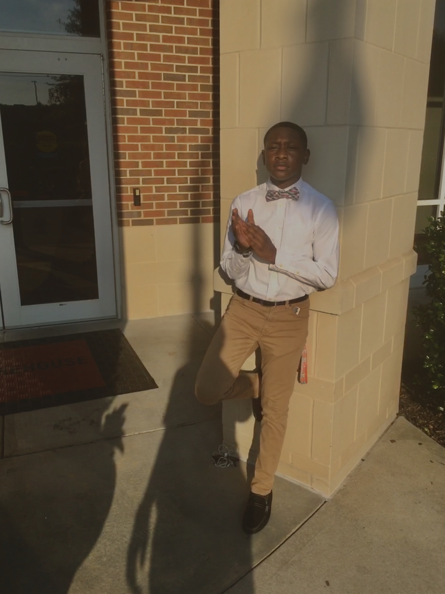

I Am The Best ME.I'm Tyler Mathieu, What set me aside from other's is my determination to always be a better me. I was born in Miami, Florida on July 20, 2004. When I was younger I never understood the true meaning of school. I use to always take it to grant until 5th grade when I was tested for honor classes. It showed People see more in me then I do. Since the 5th grade, I was an honor roll student until I get my first C in 9th grade. Some Achievements In my Life are winning the 8th-grade principal award, Honor Roll, Getting Promoted to Officer in JROTC and Becoming a SMASH Scholar.
Further On, A little better insight on me is that I'm A rising 10th grader at Mundy's Mill High School. At Mundy's Mill, I participate in Track & JROTC. I am also a Current SMASH scholar at Morehouse College. Upon graduation, I plan on attending a for year institution to Major in Political Science. I plan on either attending Morehouse College or Howard University. It takes a lot to stay determined when it's distractions everywhere around you. I bring all credit to my parents for raising me to always fight my battles no matter how difficult it can be.